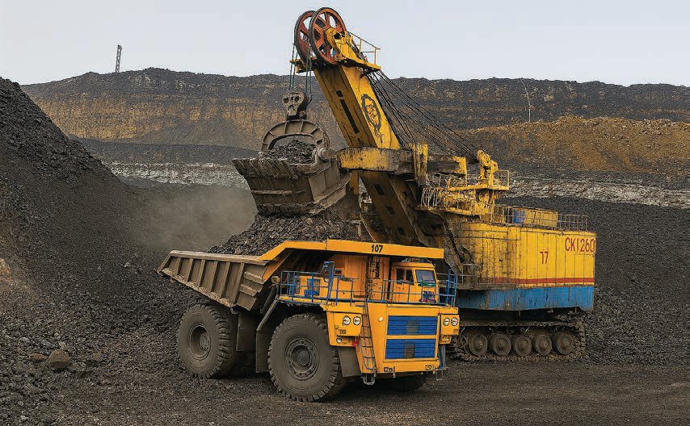

yanayopatikana katika maeneo mbalimbali ya mikoa ya kusini na magharibi mwa Tanzania. Maeneo haya ni kama vile; Mchuchuma iliyopo wilaya ya Ludewa mkoani Njombe, Kiwira iliyopo wilaya ya Rungwe mkoani Mbeya, Tunduma iliyopo wilaya ya Momba mkoani Songwe, na Ngaka iliyopo wilaya ya Mbinga mkoani Ruvuma. Makaa ya mawe yanachangia kwa kiasi kikubwa kukuza uchumi wa Tanzania kupitia matumizi yake viwandani pamoja na kuuza nje ya nchi. Kielelezo namba 3 kinawasilisha uchimbaji wa madini ya makaa ya mawe.

Madini ya almasi nchini Tanzania yanapatikana hasa katika eneo la Mwadui wilaya ya Kishapu mkoa wa Shinyanga. Eneo hili linaendelea kuwa miongoni mwa vyanzo vikuu vya uzalishaji wa almasi nchini.
Madini ya urani yanapatikana hasa katika wilaya za Manyoni mkoani Singida, Bahi mkoani Dodoma na Namtumbo mkoani Ruvuma. Mpaka sasa madini ya urani yanachunguzwa kwa matumizi ya uzalishaji wa nishati, ingawa uchimbaji wake bado uko katika hatua za maendeleo.
Madini ya chuma yanapatikana katika eneo la Liganga wilaya ya Ludewa katika mkoa wa Njombe. Eneo hili linajulikana kwa kuwa na hifadhi kubwa ya madini ya chuma. Liganga inatarajiwa kuwa na mchango mkubwa katika sekta ya viwanda nchini.